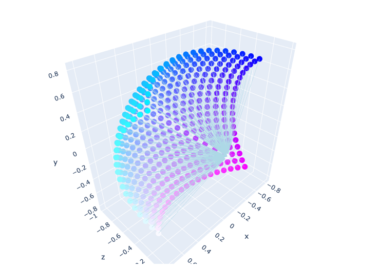
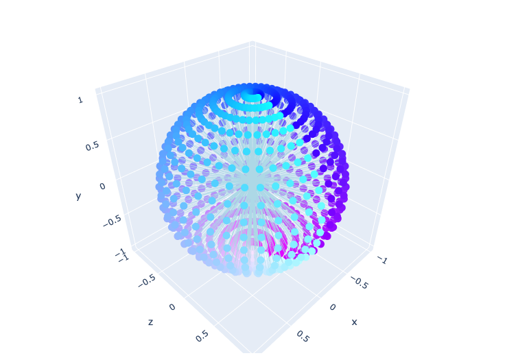

Neural Rendering in Game Engine
Overview
The project aims to explore the fusion of neural rendering and game engine. We design the pipeline of the efficient scene modeling, reconstruction with neural rendering and further utilizing the reconstructed scene in the game engine.
Neural Rendering w/ 360 Videos
Using 360 Cameras for effective large scene capturing
To efficiently capture the large scene for 3D scene reconstruction, we use 360 videos for our GT NVS sources.

Spherical 3D Gaussian Splatting
Since the origianl diff-gaussian-rasterization only supports pinhole camera model w/ perspective projection, we desing the custom 3D Gaussian Splatting Rasterizer to support the various camera model. Then, we train the 3D Gaussian Splatting scene by leveraging our custom spherical projection cuda rasterizer.
Specifically, the original equirectangular images have stitching error between two fisheye images, we actually utilize two fisheye images of the 360 captured video.
| Fisheye Camera Model | Spherical Camera Model | |
|---|---|---|
|  |  |
Gaussian Splatting w/ Game Engine
With the reconstructed 3D neural rendering scene, we further utilize it in the game engine such as Unity or Unreal, which have powerfull synthetic world generation possibility. We also show the virtual world experience w/ our recosntructed neural avatar, which is fully interactive in the game engine.